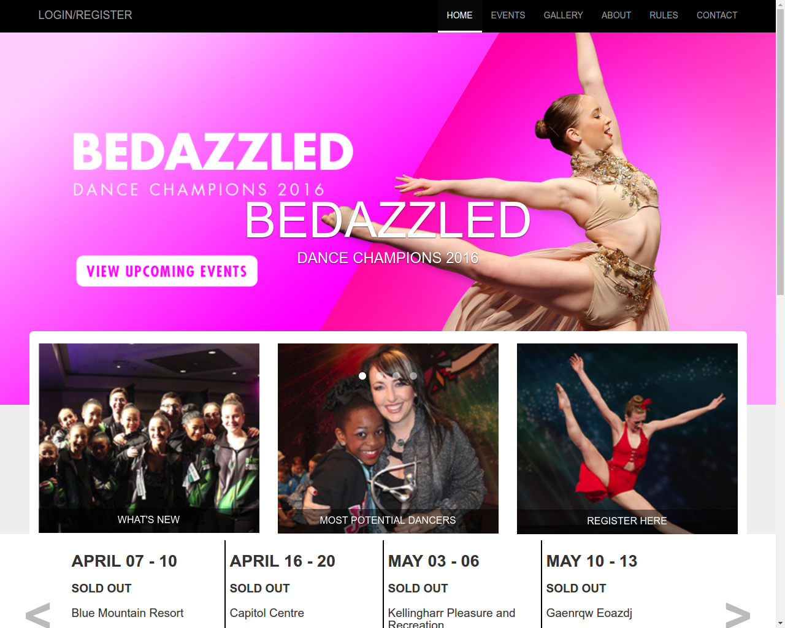
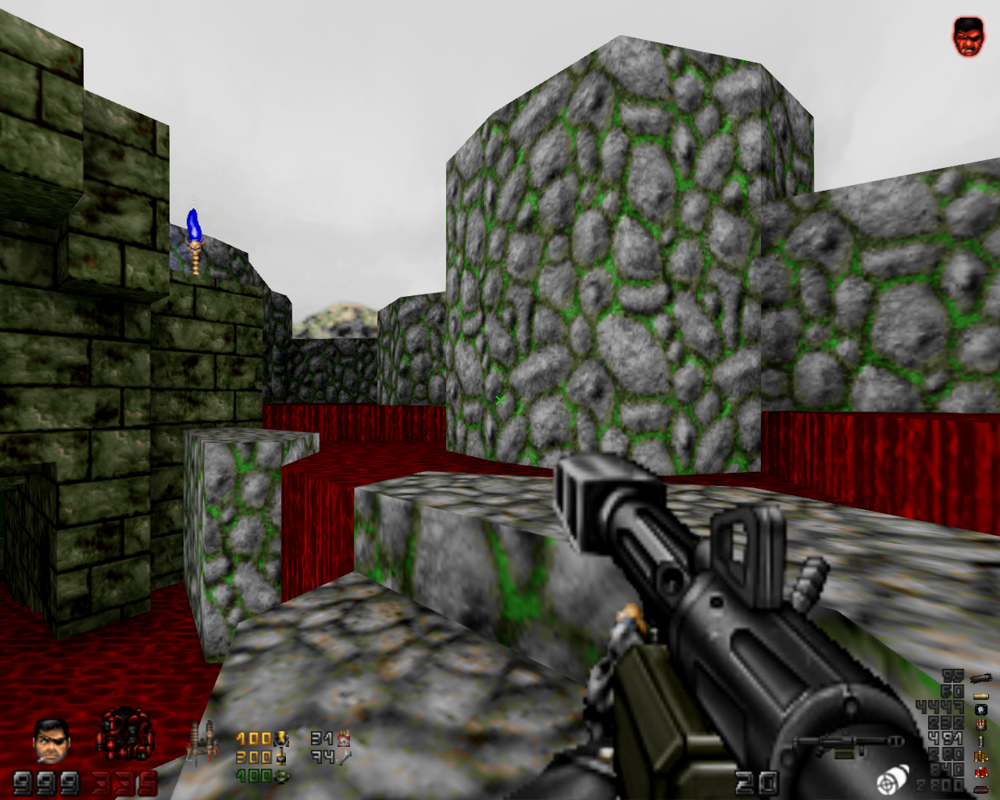
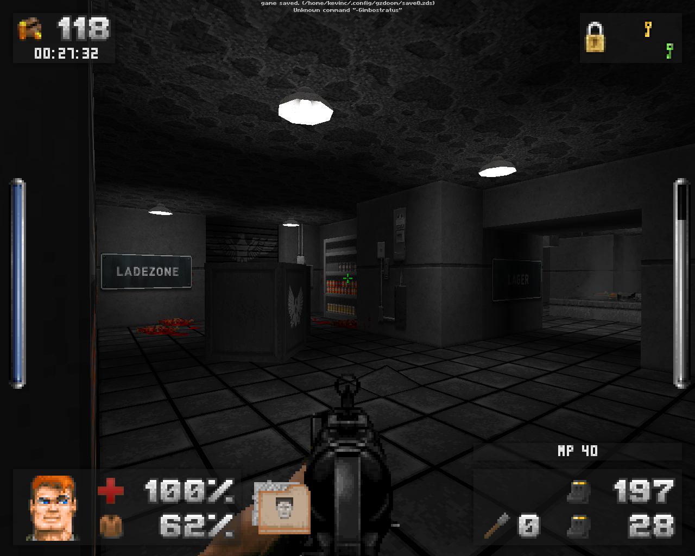

© 2017 Kevin Caccamo. All Rights Reserved. Made on with Google Fonts, Font Awesome, and the reset stylesheet.
Wing Blender is an addon for Blender which allows users to export models they create in Blender to VISION engine (Wing Commander: Prophecy, Wing Commander: Secret Ops) format.
I was the main author of this plugin, and I collaborated with others when I needed help with the code, or making important design decisions.
Learn4Life was an iOS app that was meant to teach general life skills to people with learning disabilities.
I wrote the code for the app, did most of the drawings, and commissioned some drawings from Andrea Burton.
The Northern Ontario Repeater Listings website allows people who operate amateur radio repeaters to check which frequencies are used by other repeaters in the Northern Ontario region, and decide how to set up their own repeaters.
I re-wrote the Northern Ontario Repeater Listings site from scratch using PHP with the CAPTCHA, HTML purifier, and Markdown libraries on the server side, along with Twitter Bootstrap, and an OWASP password strength test JS library on the client side.
The new site supports mobile devices, uses Google Maps for displaying and editing the locations of each repeater, supports Markdown for text content, and protects against cross-site scripting and cross-site request forgery attacks.
I wrote the HTML, CSS, and Javascript code for an experimental version of the 2017 Bedazzled Dance Champions website, which is pictured above.
The design is based on a PDF I received from the person I was working for.
I also worked on a mobile app that records audio from each Dance competition. I added code to sort each competition by date, and control when the app is allowed to upload recordings.
Freedoom is a free-content project that aims to create a set of game data (WAD) for the id Tech 1/Doom engine.
I created a set of textures that mimic the new textures from Final Doom: The Plutonia Experiment, and replaced or improved some of the existing textures using various public domain images from Flickr and OpenGameArt.
WolfenDoom: Blade of Agony is a standalone total conversion for GZDoom based on id Software's Wolfenstein series.
I re-wrote the dialogue to make it grammatically correct and fit it within the box at the top of the screen. I also wrote the unix build script, made several fixes and additions to the code, several gameplay bug fixes and balance tweaks, and created a 3D model of a Feld Hell machine.